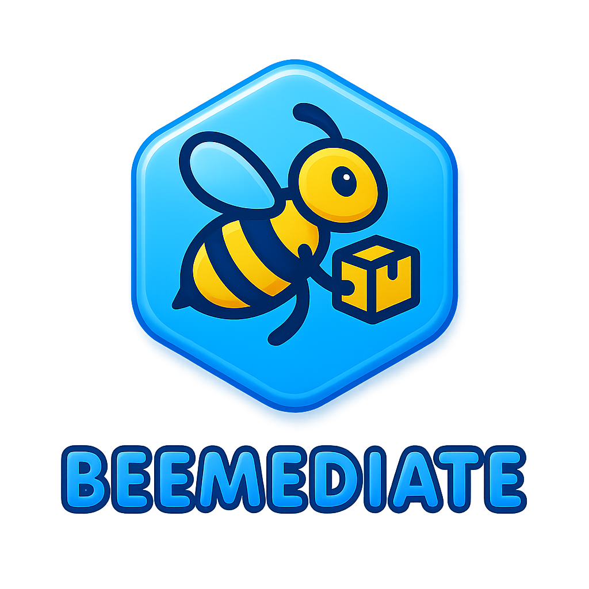

Beemediate UI
Strumenti di gestione e monitoraggio
Verifica stato backend...
check automatico ogni 5 secondi
Operazioni
Azioni rapide per gestire ordini e conferme.
Carica ordini
Verifica conferme
Risposta
Visualizza qui l'esito dell'operazione.
Risposta dal server...
Ultimo aggiornamento: --